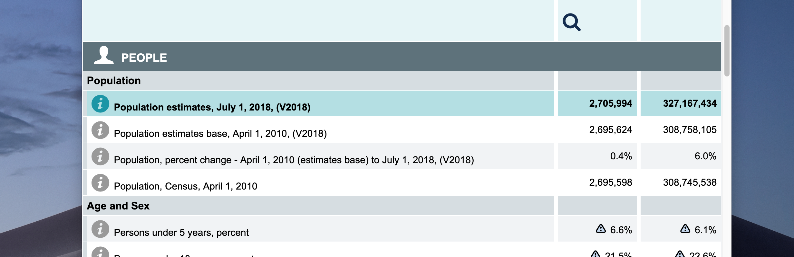

Learning the Census via Census Reporter
Learning a great resource while getting to know what’s in the Census data
Appreciating Census Reporter’s Data Visualizations
How Census.gov QuickFacts shows the facts
Top section: Population estimates

The United States Level
The local level
Look at state
Look at city